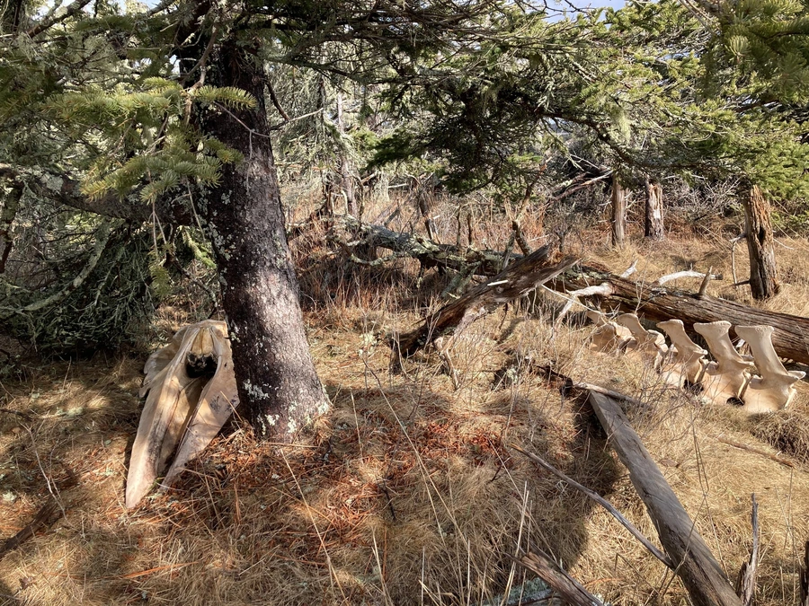

哺乳动物 · 动物界
小须鲸 Balaenoptera acutorostrata

体型最小的须鲸之一，背鳍高而呈镰刀状，鳍肢有白色横带，广泛分布于南北半球温带和寒带海域，是数量较多的须鲸。
- 分类
- 门脊索动物门纲哺乳纲目鲸目科须鲸科属须鲸属
- 栖息环境
- 温带至寒带的近岸海域和大陆架水域
- 地理分布
- 北大西洋、北太平洋及南半球温带和寒带海域，中国黄海、渤海有分布
- 保护级别
- IUCN 无危（LC）；中国国家二级保护动物
物种志
小须鲸体长 7–10 米，体重 5–10 吨，雌性略大于雄性，是最小的须鲸之一。它的背部深灰至黑色，腹部白色，鳍肢中部有一条醒目的白色横带，背鳍高而呈镰刀形，位于身体后三分之一处；鲸须为黄白色，每侧约 230–360 片。
小须鲸广泛分布于北大西洋、北太平洋和南半球温带至寒带海域，多在近岸和大陆架水域活动，常单独或结成小群。它以磷虾、桡足类和小型鱼类为食，捕食时张开大嘴吞入海水，再用鲸须滤出食物。雌性妊娠期约 10 个月，每胎 1 仔，寿命约 30–50 年。小须鲸种群数量相对较多，被列为无危，但在部分海域仍面临渔具缠绕和船只撞击的威胁。
形态与习性
- 食性磷虾、桡足类与小型鱼类
- 体长7–10 m
- 体重5–10 t
- 寿命约 30–50 年
- 繁殖妊娠约 10 个月，每胎 1 仔
- 特征鳍肢有白色横带，背鳍高而呈镰刀状
趣味知识
- 小须鲸是最小的须鲸之一，体长通常不足 10 米。
- 它的鳍肢中部有一条白色横带，是识别要点。
- 小须鲸捕食时张口吞入海水，再用鲸须滤出磷虾。